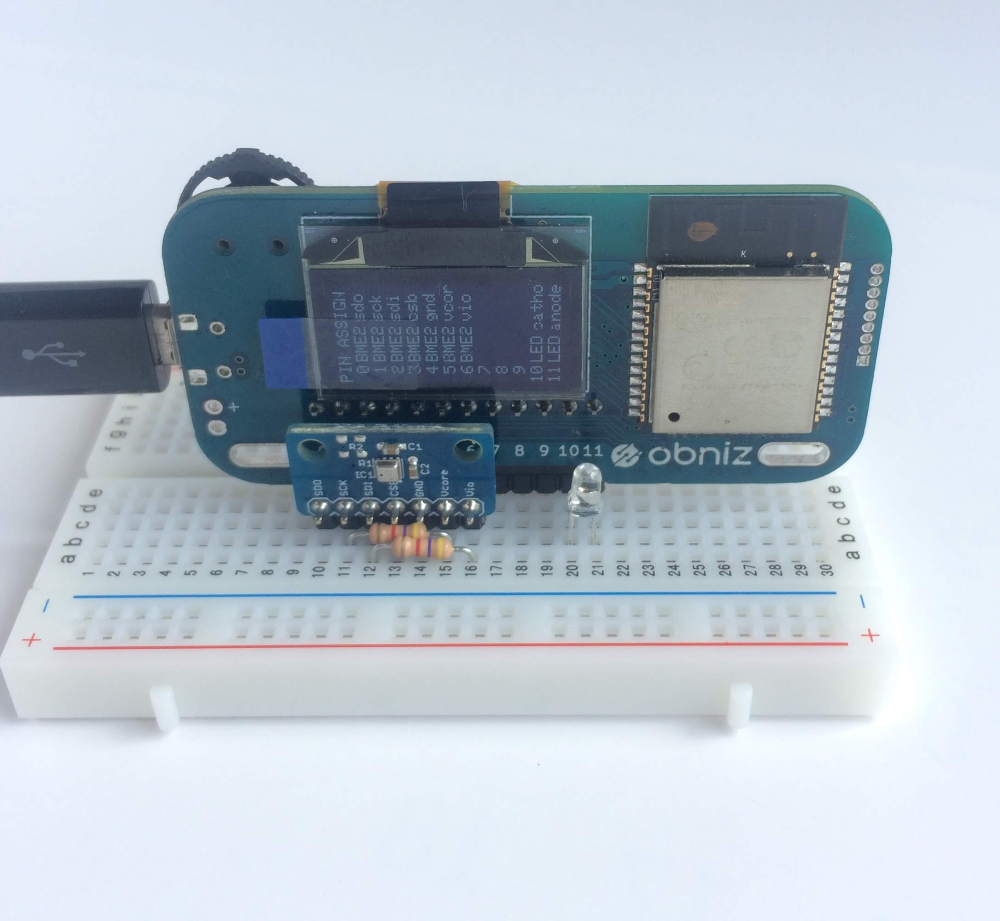

「AmbientでIoTをはじめよう」の第8回は、話題のIoT端末「Obniz(オブナイズ)」と温湿度・気圧センサBME280を使い、 環境センサ端末を作ります。
ObnizはESP32と128 x 64ドットの小型ディスプレイを搭載したボードマイコンです。 特徴の一つは12本のIOピンです。各ピンの使い方はプログラムで設定でき、それぞれのピンには1Aまで電流を流すことができます。 さらに、ショートした場合の保護回路も組み込まれています。これにより、センサだけでなく、ステップモーターなどのデバイスも直接接続できます。
もう一つの特徴はプログラミングです。 Obnizはプログラムをブラウザ(の動作しているPC)やサーバで動かし、PCやサーバからObnizに接続されたセンサなどのデバイスを制御します。 充実したJavascriptのプログラミング環境が提供されています。WebページのJavascriptからObnizを制御でき、 例えばWebページ上のボタンでObnizにつなげたLEDをon/offするなどの制御が可能になっています。
Web系のエンジニアの方がIoTを始めるには最適な端末ですし、IoTの教育やプロトタイピングにも非常に適しています。 ライブラリも、温度、距離などの各種センサやディスプレイ、サーボモーターなどを制御するものが多数用意されており、これを使うことで簡単にIoT端末のプロトタイプを動かすことができます。
Obnizに温湿度・気圧センサのBME280をつないでセンサ端末にします。 Obnizを制御するプログラムはnode.jsで記述してRaspberry Piで動作させ、5分に1回センサデータを取得し、Ambientに送信します。
さらに、Obnizから取得した温度、湿度データから熱中症の危険度を計算し、「厳重警戒」か「危険」と判定したらObnizのLEDを光らせて知らせるようにします。 熱中症の危険度は簡易な方法で計算したものですが、センサデータを取得し、エッジサーバで処理をおこなって端末を制御するサンプルとしてご覧ください。
Obnizの初期設定からプログラミングまではクイックスタートのページに丁寧に書かれているので、 これに沿って初期設定と動作確認をおこなってください。
スイッチサイエンスのBME280モジュールにはI2C通信のSCLとSDA(基板上ではSCKとSDIと表記)にプルアップ抵抗が搭載されていません。 Obnizなどで使われているマイコンのESP32はプログラムでプルアップする機能があるのでそれを使えば問題ありませんが、 ObnizのBME280ライブラリの説明では、 外部抵抗でプルアップすることが推奨されているので、それに従いました。 写真のように「両方長いピンヘッダー」を使ってObnizをブレッドボードにつなぎ、 BME280とプルアップ抵抗(4.7kΩ)もブレッドボードにつなぎます。

今回使用した部品をまとめました。
| 部品 | 個数 |
|---|---|
| obniz | 1個 |
| BME280搭載 温湿度・気圧センサモジュール | 1個 |
| 1×16 両方長いピンヘッダ | 1個 |
| 普通のブレッドボード | 1個 |
| 4.7kΩ抵抗 | 2個 |
| 抵抗入りLED(25個パック) - 赤色 | 1パック |
| Raspberry Pi 3 スターターキット(16GB版) | 1セット |
温度、湿度、気圧データを常時取得し、Ambientに送信するため、Raspberry Piをサーバにして、そこでNode.jsのプログラムを動かし、Obnizを制御します。
Node.jsのバージョンはv10.6.0を使いました。「第三回 Raspberry Pi 3に最新のNode.jsをインストールする」などを参考にRaspberry PiのNode.jsを最新版にしてください。 pi$とあるのはRaspberry Pi上のコマンド実行です。
pi$ node -v
v10.6.0
次のように適当なフォルダーを作り、npm initでNode.jsを使う環境を作り、obnizとAmbientのnode.jsライブラリをインストールします。 Ambientのライブラリはambient-libです。ambientというライブラリがありますが、別物なので注意してください。
pi$ mkdir Obniz_BME280
pi$ cd Obniz_BME280/
pi$ npm init
pi$ npm install obniz --save
pi$ npm install ambient-lib --save
次のようなプログラムをRaspberry Pi上で動かし、ObnizとBME280の接続を確認します。
Obnizサイト上のBME280のサンプルプログラムとは、BME280を逆向きに接続しています。 obniz.wired()のピン番号がサンプルプログラムと違っているので、ご注意ください。 今回はいろいろな都合でObnizサイトのサンプルと逆向きにBME280を接続したのですが、そのような場合でもIOピンの設定をプログラムで変更できるので、非常に便利です。
このプログラムを動かして、次のように温度、湿度、気圧が表示されれば、ObnizとBME280はちゃんと接続されています。 また、この時Obnizのディスプレイには、上の写真にあるように各IOピンがどのように設定されたかが表示されます。 これを見ることでプログラムの設定が正しいかを確認できます。こういった工夫も動作確認のためには便利です。
pi$ node test.js
{ temperature: 32.46,
humidity: 29.326135562651224,
pressure: 1003.778257679844 }
次にBME280から取得したデータをAmbientに送ります。Ambientのユーザー登録や基本的な使い方はAmbientのチュートリアルをご覧ください。
プログラムは次のようになります。
このプログラムもobniz.wired()のピン番号がサンプルプログラムと違っているので、ご注意ください。
8行目からのget_data_send()がBME280のデータを取得し、Ambientに送信する関数です。 BME280のデータを取得する時にawaitで同期をとっているので、関数にasyncをつけています。 25行目からのsetInterval()で300秒(5分)ごとにget_data_send()を呼んでいます。 setInterval()は指定した時間経過した後に指定した処理を実行し、それを繰り返します。 経過時間を5分と指定すると5分後に1回目の処理を実行します。 処理がうまくいっているか5分経過しないと分からないのは不便なので、24行目でsestInterval()の前にget_data_send()を1回呼んでいます。
このプログラムを動かすと、5分毎に温度、湿度、気圧の値をコンソールに出力し、Ambientにも送信して、Ambientで可視化されます。
次のように起動すると、Raspberry Piからログアウトしてもプログラムが終了しないようにできます。
pi$nohup node Ambient_obniz_BME280.js < /dev/null &
Raspberry Piで取得した温度、湿度データを基に、熱中症の危険度を計算し、「厳重警戒」か「危険」と判定したらObnizのLEDを光らせてみます。
熱中症の危険度は温度、湿度の他に輻射熱なども加えて計算しますが、 日本生気象学会「日常生活における熱中症予防指針」Ver.3には温度、湿度と熱中症の危険度の関係表が掲載されています。 これを基に、温度、湿度から簡易な方法で熱中症の危険度を計算しました。
プログラムは次のようになります。
13行目からのWBGTlevel()が熱中症の危険度を計算する関数です。26行目からのget_data_send()関数でObnizからセンサデータを取得し(27行目)、 Ambientにデータを送信し(29行目)、35行目で熱中症の危険度を計算し、「厳重警戒」か「危険」の場合にObnizにつないだLEDをonにしています(38行目)。 Obnizではセンサだけでなく、LEDやサーボモーターなどのデバイスを制御するライブラリも用意されており、これを使うことで直感的にデバイスを制御できます。
なお、ここでの計算はセンサデータを処理して端末を制御するサンプルの目的であり、正確な熱中症の危険度の計算ではないので、ご注意ください。
ObnizはObnizクラウドというサービスが用意されています。 Obniz 1台ずつにクラウドの利用ライセンスがついていて、クラウドを利用することができます。 Obnizクラウドを使うと、プログラムをクラウド上で管理したり、公開することができます。 また、サーバーレスイベントと言ってWebhookや決められた時刻などの条件でプログラムを起動する仕組みも提供されています。 こういった仕組みを使うことで、比較的簡単に定期的に動作するようなアプリケーションが作れます。
対応するセンサライブラリも随時追加されており、今後の強化にも期待できます。
この記事はアンビエントデーターの下島が担当しました。